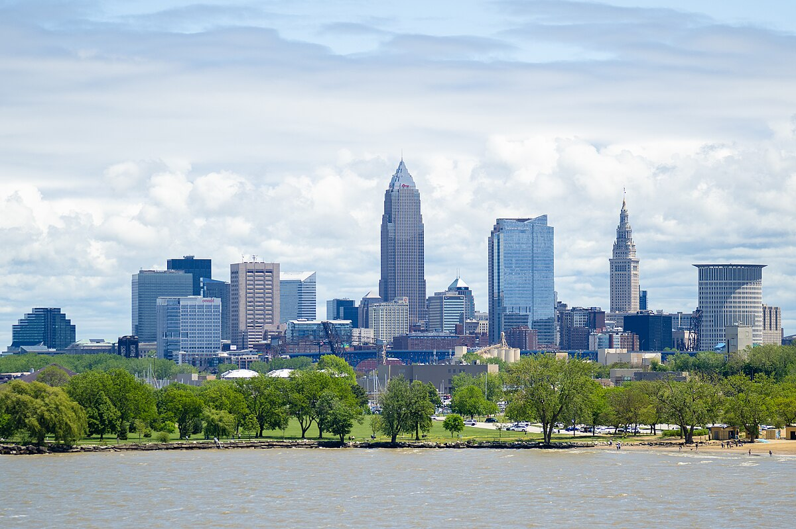

Cleveland, Ohio
Cleveland Information
This city has a population of around 373,000 people.
To learn more about the city of Cleveland, you can visit the Cleveland Wikipedia page.
Cleveland WikipediaThings I've Seen
Huntington Bank Field (Cleveland Browns Stadium)
The Huntington Bank Field is a classic football stadium located right off of the Great Lakes. The stadium is excellent to watch a game and perhaps take in the sights of the lake.
To learn more about the Huntington Bank Field, you can visit this website for more information linked below.
Huntington Bank Field WebsiteGreat Lakes Brewery
Great Lakes Brewery is a beer brewery that is well known in the city of Cleveland and has roots since 1988. I find their name exceptionally fitting for the city of Cleveland, as it is off of the Great Lakes.
To learn more about Great Lakes Brewery, you can visit this website for more information linked below.
Great Lakes Brewery WebsiteBlack Box Fix
Black Box Fix is a black owned sub shop that adds soul to hoagie sandwiches. My girlfriend introduced me to the place and the shop is in a lovely outdoor shopping mall called the Legacy Village.
To learn more about Black Box Fix, you can visit this website for more information linked below.
Black Box Fix WebsiteDave’s Supermarket
Dave’s Supermarket is a chain supermarket that operates out of Cleveland Ohio. Their prices are low and their selection is high.
To learn more about Dave's Supermarket, you can visit this website for more information linked below.
Dave's Supermarket WebsiteLake Erie - Beach
Lake Erie is a must see destination when visiting the city of Cleveland. There is lots of sand and seagulls. I would recommend taking a beach blanket out there and having a picnic.